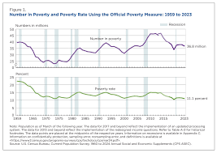
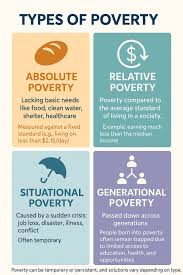

Welcome
How many people are affected by poverty?
As of 2025, approximately 800 million people worldwide live in extreme poverty, surviving on less than $3 per day.
That is about 10% of the global population.
Scratch Game
Code.org quiz
Poverty around the world
South Sudan has the highest rate of extreme poverty at 82%.
Next is Madagascar with 75%.
In 3rd there is Eritrea with 69%.

The different types of poverty
Absolute Poverty: A severe, life-threatening scarcity of basic needs, including food, clean water, and shelter.
Situational Poverty: Temporary, sudden poverty caused by events like job loss, health emergencies, or natural disasters.
Extreme Poverty: A sub-type of absolute poverty, often defined by the World Bank as living on less than or a day.
